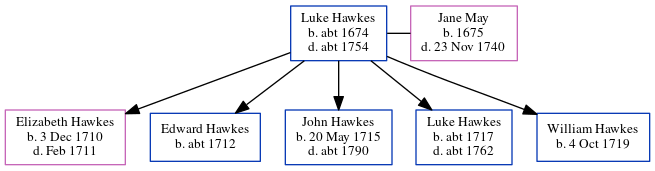

Luke Hawkes c1674 - c1754
[ Home ] | [ Calendar ] | [ Surnames Index ] | [ Census Index ] | [ Family History ]Luke Hawkes, the 7 times great-grandfather of Nigel Horne, was born in Fordwich, Kent, England c. 16741,2 and married Jane May (with whom he had 5 children: Elizabeth, Edward, John, Luke and William) in Fordwich on Oct 30, 17093.
He died c. 1754 in Fordwich1,2 and was buried there on Mar 6, 17541,2.
Children
- Elizabeth was born on Dec 3, 1710
- Edward was born c. 1712
- John was born on May 20, 1715
- Luke was born c. 1717
- William was born on Oct 4, 1719
Citations
- England, Select Deaths and Burials, 1538-1991 Ancestry.com Operations, Inc.
- Kent, England, Tyler Index to Parish Registers, 1538-1874 Online publication - Provo, UT, USA: Ancestry.com Operations, Inc., 2010. This collection was indexed by Ancestry World Archives Project contributors.Original data - Frank Watt Tyler. The Tyler Collection. Canterbury, Kent, England: The Institute of Herald
- England Marriages 1538-1973 - Findmypast
Family Tree
Generated by ged2site. Last updated on Jun 11, 2024